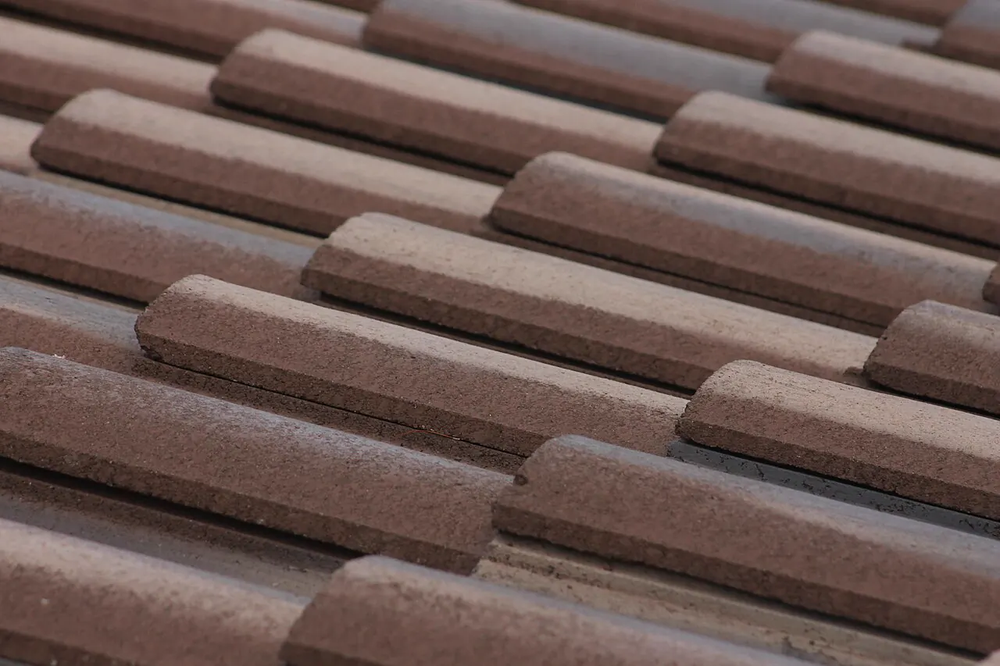
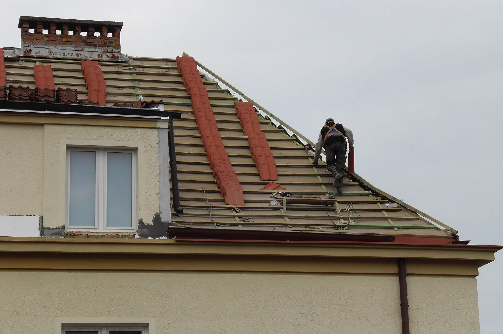
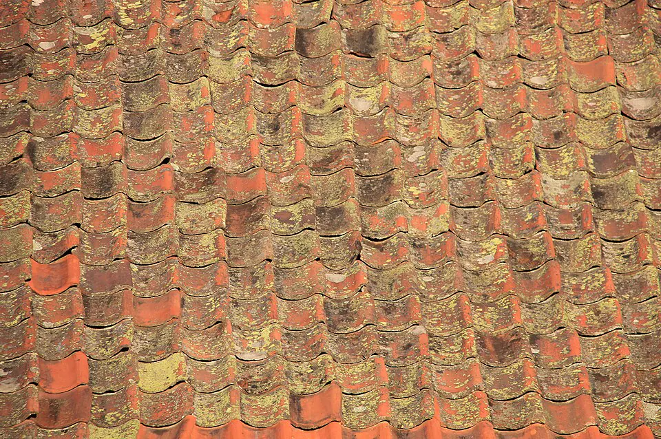
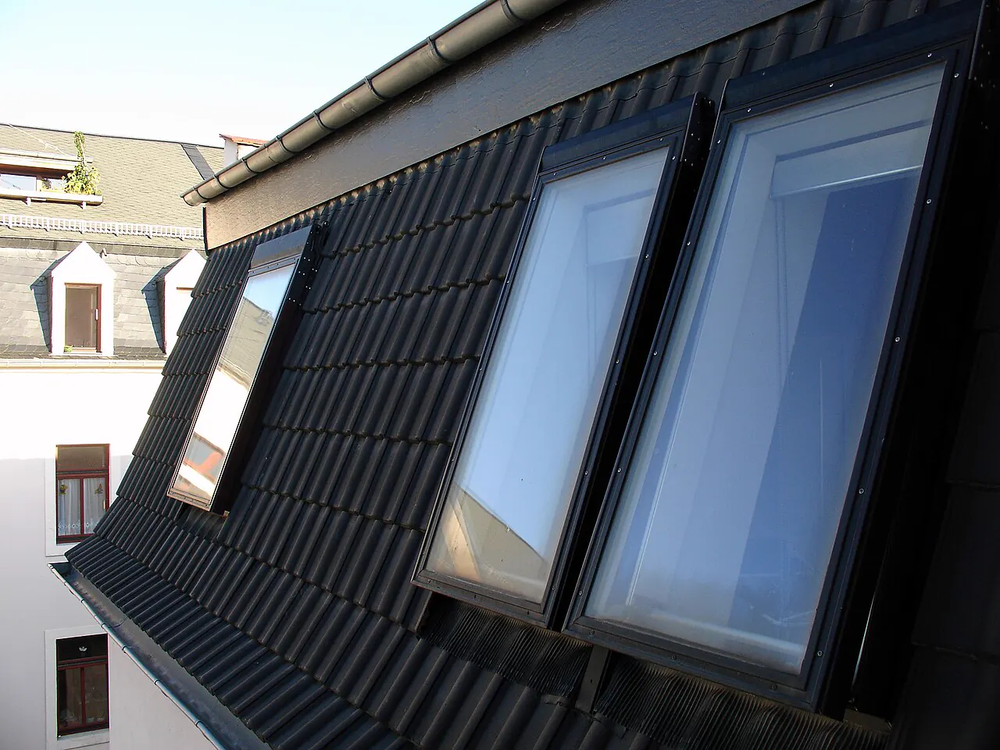
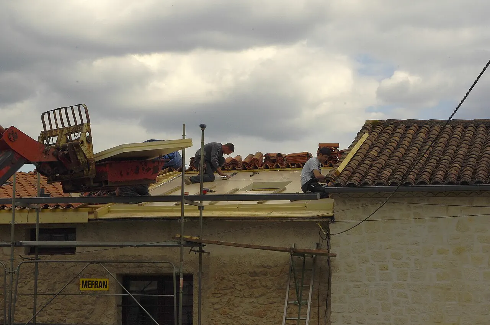

Termin ausmachen
Sie rufen an oder schicken uns das Formular, wir melden uns mit einem Termin.


Meisterbetrieb seit 1972 für Steildach, Flachdach und Reparaturen. Notdienst auch am Wochenende.
Vom einzelnen Ziegel bis zum ganzen Dach.
Ziegel und Dachsteine, neu gedeckt oder saniert
Abdichtung für Neubau und Sanierung
Sturmschäden, undichte Stellen, lose Ziegel
Dachrinnen, Fallrohre und Anschlüsse aus Zink
Mehr Tageslicht für den Dachausbau
Wärmedämmung, Fassadenbekleidung, eigenes Gerüst

Kostenlos und unverbindlich. Danach wissen Sie, wie es um Ihr Dach steht.
Sie rufen an oder schicken uns das Formular, wir melden uns mit einem Termin.

Ein Meister sieht sich Ziegel, Rinnen, Anschlüsse und Dämmung vor Ort an.

Sie bekommen ein schriftliches Angebot und entscheiden in Ruhe.

Betrieb seit 1972
Gisbert Metz hat den Betrieb 1972 in Wilhelmshaven gegründet. Seit 2003 führt ihn sein Sohn Markus Metz als Dachdeckermeister. Wir sind Mitglied der Dachdecker-Innung Oldenburg und bilden selbst aus.
Was Kunden vor dem ersten Anruf wissen wollen.
Nein. Wir sehen uns Ihr Dach kostenlos an und sagen Ihnen, was zu tun ist.
Ja. Bei einem undichten Dach oder Sturmschaden erreichen Sie unseren Notdienst rund um die Uhr.
Ja. Als Innungsbetrieb geben wir umfassende Gewährleistung auf unsere Arbeit.
Für Hausbesitzer, Wohnungsbaugesellschaften, Firmen, Banken, Kliniken und Kirchen in Wilhelmshaven und Umgebung.

Schreiben Sie uns kurz, worum es geht. Wir rufen zurück und machen einen Termin aus.
